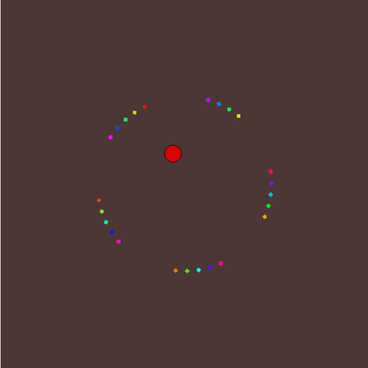
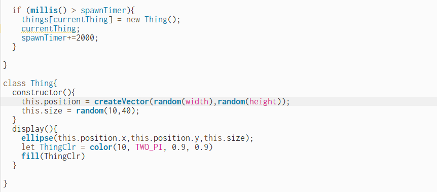
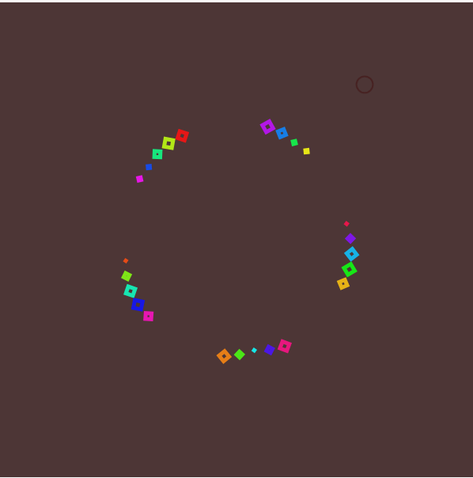
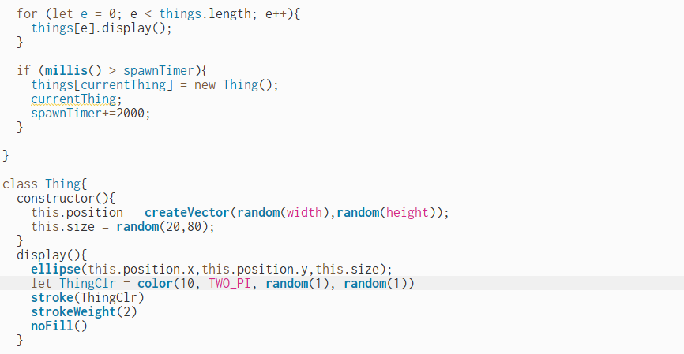
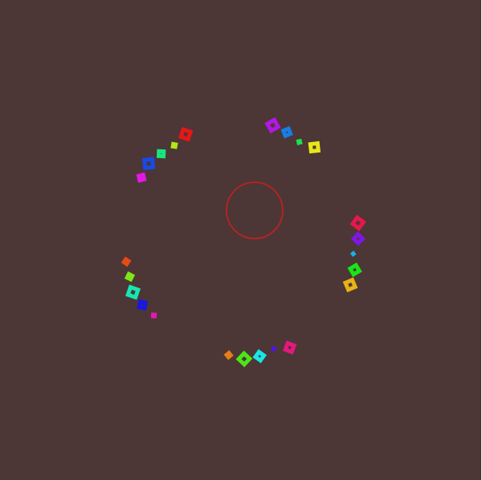

P5Js Time and Oscillation Coding Project
I made the code for this project based upon what we did in class with the visualizer and utilizing the (sin) function and mils for time based movement.

Picture 2
I also coded a small ellipse to appear after 2,000 ms. this then randomly changes in size and position across the canvas after an additional 2,000 ms.

Picture 3
The code for the changing ellipse was borrowed and reconstructed from another project I found on P5Js. Similar to the code for the squares it uses millis to create a timer where a new object is spawned after 2,000 ms.

Picture 4
I had a lot of issues with changing the color of the randomly appearing ellipse, for whatever reason it was very determined to make itself red even though I tried experimenting with multip[le different colors. I eventually just settled on leaving it red as I was happy with that.

Picture 5
Okay so I wasnt perfectly happy… I attempted to randomize the color and also turned the circle into just a stroke outline as I liked being able to see through it more. I successfully managed to randomize the stoke color in different shades of red but ran into a few issues…

Picture 6
For an unknown reason this code makes the random stroke saturation trigger several times per iteration rather then just once which is how I want it. Likely something to do with the millis setup I’ve constructed, as it is somehow running the random color mode many times a second.
